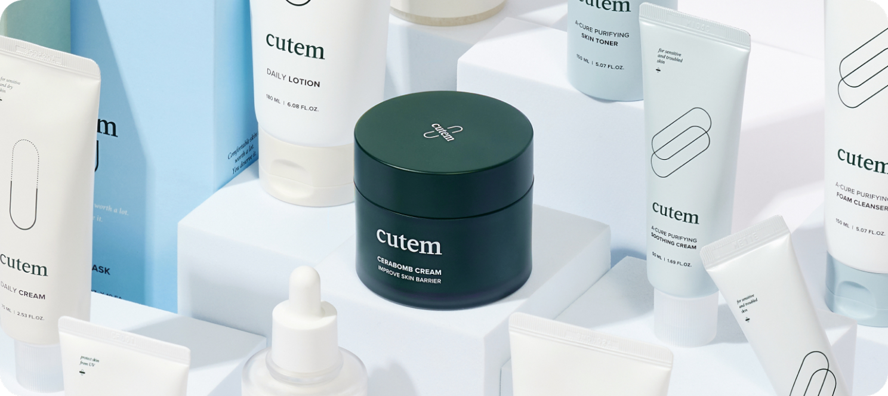

WHAT’S SKINMED
아름답고 건강한 피부란 새로운 것을
더하는 것이 아닌 본연의 것을 되찾아 주는 것
이라는 믿음을 가지고 연구합니다.
스킨메드는
단순한 케어가 아닌 큐어를
목표로 연구하는 기업입니다.
폭넓은 연구 분야
화장품 개발에 그치지 않고 의약품 개발 연구까지
혁신적인 연구와 폭넓은 기술 개발을 전개합니다.
OUR BUSINESS
스킨메드는 연구결과를 통해 다양한
비즈니스를 전개하고 있습니다.
Cosmetic
Brand
건강하고 아름다운 피부를 위한 효과적인 성분 배합으로 피부의 고민을 해결하는 데
중점을 두며, 다양한 피부 타입과 피부 고민에 맞춘 라인을 갖추고 있습니다.

Clinical Trial
Center
스킨메드 임상센터는 임상 시험을 통해 화장품이 피부에 미치는 영향을
과학적으로 분석하고, 제품의 품질과 신뢰성을 보장하는 데 중점을 둡니다.
R&D
연구진들의 축적된 노하우와 첨단 바이오 기술을 바탕으로, 인체에 효과적이며 친화적인 차세대 소재를
연구, 개발하는데 전념하고 있습니다. 더 나은 삶을 위한 다양한 분야의 연구에 집중하고 있습니다.
NEWS
스킨메드의 새로운 소식을
전달드립니다.
NEWSROOM
NOTICE